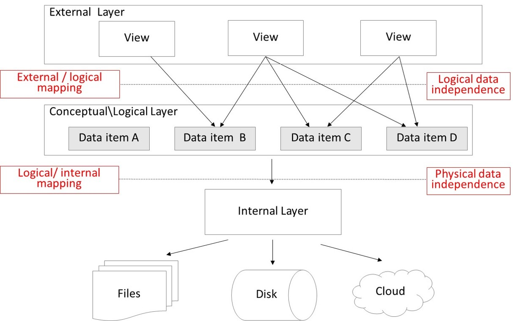

1. Three Layer Architecture
Logical Layer
De Logical Layer is waar we bepalen hoe onze data gestructureerd wordt. Hier bepalen we wat voor data we bijhouden, hoe die data eruitziet en hoe die zich gedraagt ten op zichte van onze andere datamodellen.
Enkele voorbeelden hiervan zijn:
- Een BOEK mag door maximum 0 of 1 PERSONEN ontleend worden.
- Een PERSOON mag meerdere BOEKEN ontlenen.
- Een PERSOON is een subtype van een GEBRUIKER.
Oefening
- Hoe zou een database model van een bibliotheek eruit zien? Teken zelf eens uit hoe dit gemodelleerd zou kunnen worden.
- Hoe houdt ik bij dat een boek uitgeleend werd?
- Wat als ik ook andere dingen wil uitlenen uit de bibliotheek, zoals DVD’s of eBooks?
Internal Layer
De Internal Layer houdt zich bezig met alle details over hoe de data bewaard wordt. Sommige van de concepten die hier aan bod komen zijn de volgenden:
- Index management
- Constraint definities (uniek, referentieel, …)
- Gepartitioneerde tabellen
- …
Deze technologieën hebben allemaal te maken met performantie of data integriteit. We willen onze data op een zo’n performante manier opslaan én nog belangrijker op een zo performante manier terug ophalen.
Indexatie
Data wordt ongestructureerd bijgehouden in een tabel. Een tabel is eigenlijk niet meer dan een ongesorteerde lijst van gegevens. Bij elke nieuw element wordt dat aan het eind van de lijst toegevoegd.
Wat als we nu uit een lijst van miljoenen boeken de verzamelde werken van Tolkien willen ophalen? In plaats van door de hele lijst één voor één te gaan zoeken, kunnen we gelukkig gebruik maken van indexen.
Een index is een inhoudstafel die we bijhouden van een bepaald aantal velden van onze tabel. Stel we hebben een Book tabel met miljoenen rijen, waaronder de volgende:
| id | isbn | title | author | price |
|---|---|---|---|---|
| 1345 | 0765326353 | The Way of Kings | Brandon Sanderson | 24.99 |
| 6789 | 0395177111 | The Hobbit | J.R.R. Tolkien | 24.99 |
| 3240 | 0812511816 | The Eye of the World | Robert Jordan | 24.99 |
| 8939 | 0358439191 | The Lord of the Rings | J.R.R. Tolkien | 24.99 |
| 1230 | 0143111582 | Dune | Frank Herbert | 24.99 |
Als we een index zouden leggen op de author kolom dan zou die volgende informatie kunnen bevatten:
| author | id |
|---|---|
| Brandon Sanderson | 1345 |
| Frank Herbert | 1230 |
| J.R.R. Tolkien | 6789 |
| J.R.R. Tolkien | 8939 |
| Robert Jordan | 3240 |
Een index houdt een mini-tabel bij van de velden die aan de index worden toegevoegd in combinatie met het identity1 veld. Deze tabel is wel gesorteerd op de velden uit de index, wat zoekopdrachten versnelt.
Constraints
We kunnen onze tabellen behoeden van corrupte data te bevatten door constraints te gebruiken. Het ISBN veld is bijvoorbeeld een uniek veld en mag nooit een waarde bevatten die al gekend is in onze database. Hiervoor kunnen we een unique constraint toevoegen. Bij data insertion gaat de database zelf nakijken of deze value al bestaat en zo ja wordt het toevoegen van de record geblokkeerd. Zo behouden we onze data integriteit.
Andere voorbeelden van constraints kunnen zijn:
- De prijs van een boek moet groter dan 0 zijn
- Een boek kan niet verwijderd worden als het ooit werd uitgeleend
- Het ISBN-13 nummer moet 13 karakters hebben
- Het ISBN nummer moet
-een aantal keren bevatten - Een naam veld mag niet
NULL(niet ingevuld) zijn - Een email veld moet
@bevatten - …
Hoe constraints in de praktijk worden toegevoegd aan data modellen wordt behandeld in het hoofdstuk SQL DDL & DML. Zie ook SQLite table-constraint syntax.
Gepartitioneerde tabellen
Sommige tabellen in productie omgevingen bevatten immense hoeveelheden aan data. We spreken over een grootorde van meerdere miljarden rijen. Hoe groter een tabel wordt, hoe trager het wordt om data op te halen. Het maakt niet uit hoeveel indexen we hebben gelegd, of welke SSD schijven we onderliggend op de fysieke storage hebben zitten. Meer data gaat altijd gelijk staan aan tragere data retrieval.
Om tegen te gaan dat we tabellen krijgen die té groot worden en we daar niet meer zinvol data van kunnen ophalen bestaan hier een paar oplossingen voor. Het partitioneren van tabellen is er eentje van. Archivatie is een andere oplossing.
Neem als voorbeeld een bank, die elke overschrijving van een rekening moet bewaren. De overschrijving tabel zou kunnen gepartitioneerd worden op jaar. Zodat er nog steeds 1 tabel overschrijving is, maar waarbij we die op de fysieke schijf opsplitsen per jaar, en elke op bijvoorbeeld de recentste 3 jaren index management voor bijhouden. De andere jaren kunnen nog steeds opgevraagd worden maar niet met dezelfde performantie als de meest recente data.
External Layer
De External Layer is wat we van onze database laten zien aan de buitenwereld. Dit zijn views van data. Een view is een virtuele representatie van data. We schrijven een query op onze tabellen en bewaren deze query als een view. Op deze manier kunnen we garanderen aan integrerende applicaties dat onze data er steeds hetzelfde gaat uitzien en tevens beschermen van informatie die voor het integrerende systeem niet relevant is.
In onze bibliotheek kunnen we een aantal views osptellen op basis van de noden van de verschillende applicaties. In het online platform waar je boeken kan uitlenen is het niet nodig de informatie over een auteur als een aparte entiteit weer te geven. We kunnen de tabel van Authors dus verbergen en enkel een view aanbieden op niveau van Books die er als volgt zou uitzien:
Voor de inventaris applicatie moeten we wel in staat zijn om nieuwe boeken en auteurs toe te voegen. Daar kunnen de views er dan als volgt uitzien:
2. Catalog
Dit is het hart van de de database. Dit bevat alle metadata die zich in de database bevindt. Onder andere, de tabellen; views; stored procedures; …
De SQL standaard om deze informatie in te bewaren is in INFORMATION_SCHEMA. Niet alle SQL Database providers voldoen hier echter aan. SQLite doet dit niet en daar vind je die informatie in de tabel sqlite_master.
3. Database Languages
SQL is onderverdeeld in twee verschillende talen. Enerzijds heb je DDL (Data Definition Language). Dit gebruik je om de database structuur te wijzigen. Nieuwe tabellen toevoegen, indexen aanmaken, views verwijderen, …
Anderzijds heb je DML (Data Manipulation Language). Dit gebruik je voor alle CRUD (Create, Read, Update, Delete) acties op data. Hier gaan we in een volgend hoofdstuk verder op in gaan.
-
Eigenlijk niet het Identity veld, maar het veld dat in de Clustered Index zit van de tabel. Als er dan in de query meer informatie nodig is om op te halen kan die via die manier de rest van de data ophalen. ↩︎